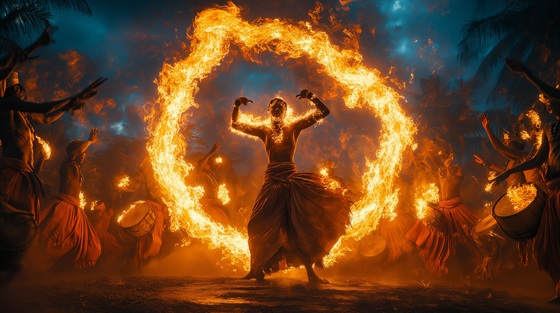

In Shango's worship, dance is not performance — it is possession. During Yoruba rituals, followers enter trance through sacred drum rhythms and become vessels for the Orisha. His spirit takes over, and through movement, voice, and fire, he is present in flesh.
This is not myth. It is living tradition — in Nigeria, Brazil, Cuba, Trinidad. Shango comes with flame in foot, storm in chest, and lightning in voice. His dance is not graceful — it is power incarnate. And when it begins, the spirit world touches the mortal.
This track is a tribute to those who carry Shango, whose sweat becomes incense, and whose steps summon thunder.
The Dance of Flame and Storm
The fire starts with just a beat,
The circle forms, the ground grows heat.
They dance until their names dissolve,
And drums call gods the world can't solve.
Spirits rise through flesh and flame—
He comes when rhythm shouts his name.
Flame and storm, breath and bone,
The fire speaks and he walks home.
Spin the sky, break the ground—
Shango moves when drums resound.
Their feet are dust, their voices gone,
But in the storm, the dance goes on.
He lives in hips that know no shame,
And lightning loves a sacred name.
The sweat is prayer, the cry is call—
The Orisha answers when they fall.
Flame and storm, breath and bone,
The fire speaks and he walks home.
Spin the sky, break the ground—
Shango moves when drums resound.
The women scream, the men go still,
Their bodies taken by his will.
He leaps from soul to soul in flight—
A blaze in every trembling light.
No mask can hide, no song can fake—
He only comes when spirits break.
Flame and storm, breath and bone,
The fire speaks and he walks home.
Spin the sky, break the ground—
Shango moves when drums resound.
Drum is doorway, fire the key—
Open the flesh, and let him see.
You are the ground, he is the flame—
Now rise and burn in Shango's name.
He leaves with smoke, but not with sound—
Shango danced. The god was found.